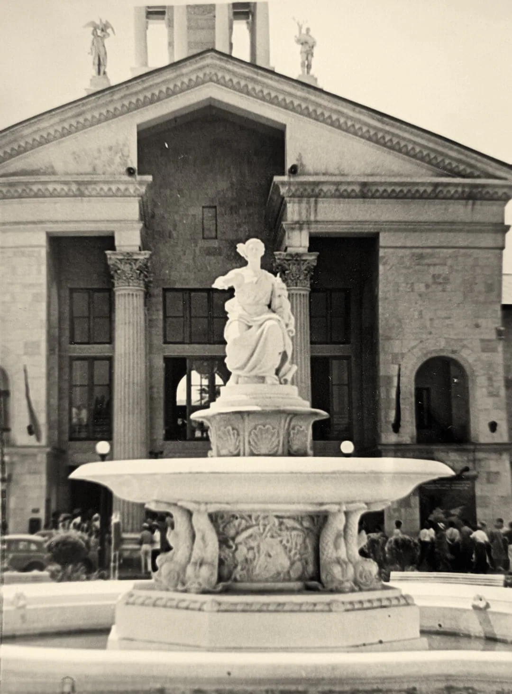
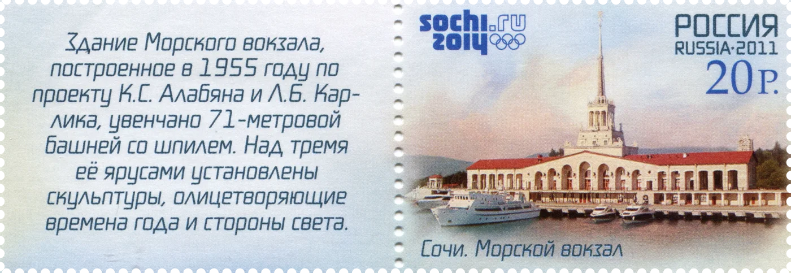
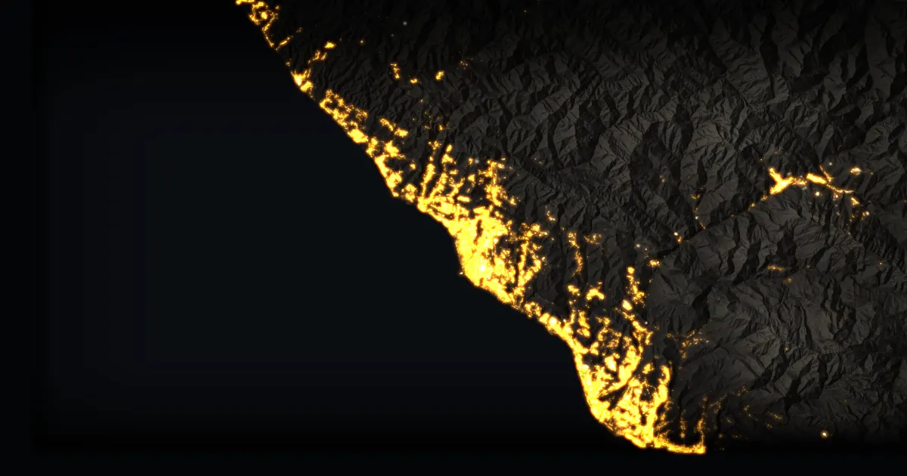

Глава седьмая
1955
Морской вокзал
После войны курорту понадобились новые ворота — с моря.
Морской порт Сочи

Морской порт Сочи. Вечер, сегодня
Временный кадр до съёмки на точке. Фото: Carbonkidka, 2017, CC BY-SA 4.0


1957
Архивный снимок, PastVu № 2558141
2014
Фото: Юлия Небышинец, CC BY-SA 4.0
Фонтан со скульптурой «Навигация» перед вокзалом, 1957 годЛистайте: архивный снимок растворится в сегодняшнем
Одна точка съёмки, между кадрами 57 лет
Тот же фонтан, 2014 годПересъёмку 2026 года оператор сделает с этой же точки
Порт начали строить ещё до войны, а вокзал со шпилем спроектировали в начале 1950-х и открыли в конце 1955 года. Он встречал теплоходы и стал визитной карточкой Сочи.
Что это
Ворота курорта с моря
Морской вокзал — главное здание морского порта Сочи: двухэтажный корпус с длинными галереями и башня со шпилем высотой 71 метр.
Его построили в 1955 году как пассажирские ворота курорта: у причалов швартовались теплоходы линии Одесса — Батуми и суда на подводных крыльях «Комета». Сегодня вокзал — памятник архитектуры, а в порту стоят яхты и круизные лайнеры.
- Где
- Морской порт Сочи, у устья реки Сочи
- Архитекторы
- К. С. Алабян, Л. Б. Карлик
- Скульптуры
- В. И. Ингал с группой молодых скульпторов
- Открыт
- В конце 1955 года
- Башня
- 71 м со шпилем по тексту марки 2011 года; сайт «Адмирал Сочи» пишет о 74 м
- Стиль
- Охрана
- Памятник архитектуры федерального значения
Как это появилось
Одна стройка, две эпохи
11 апреля 1934
До 1930-х годов в Сочи не было морского порта, хотя город стоит на море. Порт создали приказом Наркомата водного транспорта № 125, по данным сайта «Адмирал Сочи», в те же годы, когда Сочи превращали во всесоюзный курорт. Гостей ждали не только поезда и шоссе, но и теплоходы.
1934–1941
Водолазы помогали строить северный и южный и причалы. К 1941 году построили первое деревянное здание порта, 200-метровый свайный причал, мастерские и часть молов.
1941–1945
Война остановила работы. По Википедии, 19 мая 1943 года торпеда немецкого катера попала в недостроенный северный мол. Порт достраивали уже после войны.
1950–1954
Архитекторы Каро Алабян и Леонид Карлик составили план порта и спроектировали вокзал. На снимках 1952–1953 годов видны бетонные опоры и леса, в 1954 году поднимали на башню тросами и электролебёдкой. Скульптуры башни сделал Владимир Ингал с группой молодых скульпторов.
1955
Вокзал открыли в конце года. Шпиль из полированной нержавеющей стали поднялся на 71 метр, над тремя ярусами башни поставили скульптуры, олицетворяющие времена года и стороны света. Внутри были кассы, зал ожидания, ресторан «Морской» и клуб моряков.
2014
Перед Олимпиадой порт расширили: построили причалы для больших круизных лайнеров и новое здание вокзала. В историческом здании теперь магазины, рестораны и кафе, а сам вокзал остаётся памятником архитектуры федерального значения.

«Здание Морского вокзала, построенное в 1955 году по проекту К. С. Алабяна и Л. Б. Карлика, увенчано 71-метровой башней со шпилем. Над тремя её ярусами установлены скульптуры, олицетворяющие времена года и стороны света».
Архив и сегодня
Как поднимали шпиль и что стало с причалом
На что посмотреть
Пять деталей у вокзала
Башня, шпиль и скульптуры
Над тремя ярусами башни стоят скульптуры, олицетворяющие времена года и стороны света (так сказано на марке 2011 года). Шпиль из полированной нержавеющей стали блестит на солнце.
Фонтан «Навигация»
Напротив вокзала стоит фонтан с чашей 7 метров (другие источники дают 8). В руке у женской фигуры кораблик и , другой рукой она будто успокаивает волны.
Галереи и маленькие фонтаны
К главному корпусу примыкает двухэтажная галерея с арками и внутренними двориками. По бокам здания стоят фонтаны с чашами-раковинами: в одном фигурка девочки, в другом мальчика, оба держат рыбку.
Герб СССР на фасаде
В арочных нишах фасада рельефы с гербом СССР. Когда именно его установили, мы не выяснили.
Башня, которую принимают за маяк
На северном молу стоит другая башня. Её часто считают маяком, но это был пограничный пост наблюдения за судами, входящими в порт (Википедия).
Значение для Сочи
Символ города на открытках и марках: башню со шпилем узнают с первого взгляда.
Значение для России
Пример того, как государство достраивало довоенный курортный план: порт начали строить в 1930-х, стройку остановила война, а вокзал открыли в 1955 году.
Раздел курса: 2. Российское государство-цивилизация
Ценность: созидание и развитие

Факт, который мало кто знает
Стройку порта прервала война. На снимке 1952–1953 годов видно, как возводят стены и опоры здания.
И ещё: с 27 августа 1948 по 3 июня 1958 года Сочи был городом республиканского подчинения, как Москва, Ленинград, Киев и Севастополь, то есть подчинялся не краю, а республике. Вокзал достраивали именно в эти годы (Википедия: «История Сочи», «Сочи»).
Строительство Морского вокзала, 1952–1953. Фото: Соловьёв, МКУ «Архив города Сочи», PastVu № 2095347
Что вы узнали
Три вещи о Морском вокзале
Одна стройка, две эпохи
Порт Сочи создали в 1934 году как часть проекта всесоюзного курорта, а Морской вокзал достроили в 1955 году, после войны.
Авторы
Здание спроектировали Алабян и Карлик, скульптуры сделал Ингал. Башня высотой 71 метр со шпилем из нержавеющей стали стала символом города.
Числа надо проверять
Источники расходятся: 71 или 74 метра, чаша фонтана 7 или 8 метров. Надёжнее опираться на первоисточник, например на текст марки.
Проверьте себя Почему вокзал называют стройкой двух эпох?
Порт начали строить в 1930-х годах по плану всесоюзного курорта, стройку прервала война, а вокзал со шпилем спроектировали и открыли уже в 1950-х.
Источники главы Статьи, документы и авторы снимков
- Марка «Сочи. Морской вокзал», Почта России, ИТЦ «Марка», 2011: текст купона. Викисклад, общественное достояние.
- Википедия: Морской вокзал (Сочи), Сочинский морской торговый порт, К. С. Алабян, Л. Б. Карлик, В. И. Ингал.
- Морской порт Сочи. Сайт «Адмирал Сочи»: приказ 1934 года, открытие в конце 1955 года, 74 м.
- Архивные снимки PastVu: № 2558141, № 2095347, № 787649, № 787451, № 2510379, № 2375951; воспроизведены как учебная цитата.
- Современные снимки (Викисклад): Carbonkidka, 2017, Юлия Небышинец, 2014, Жанетта Багаджиян, 2021, Aleksandra057, 2018, — CC BY-SA 4.0; Kemal KOZBAEV, 2014, CC BY-SA 3.0.
